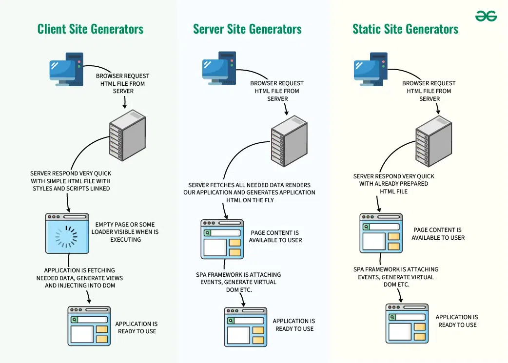

Definition of single page application(SPA)
A Single Page Application (SPA) is a type of web application that
loads and updates content dynamically without refreshing the entire
page. Unlike traditional websites, SPAs use modern technologies to
enhance the user experience by minimizing interruptions and
providing a smoother interface. Users can interact with the
application seamlessly, similar to using desktop software. The main
advantage is the elimination of full-page reloads, resulting in a
more responsive and engaging web experience. This is achieved by
ensuring that the browser obtains all essential HTML, JavaScript,
and CSS codes in one request or updates the necessary content based
on user actions.
Advantages of SPA
-
Improved User Experience and Speed: SPAs
provide a more fluid and app-like experience by eliminating
full-page reloads. After the initial load, only necessary data
is fetched, leading to faster transitions between views and a
highly responsive interface.
-
Reduced Server Load and Bandwidth Usage: By
loading most resources (HTML, CSS, JavaScript) only once, SPAs
minimize subsequent server requests. This reduces the burden on
the server and lowers bandwidth consumption, benefiting both
users and infrastructure costs.
-
Enhanced Interactivity and Responsiveness: SPAs
enable the creation of dynamic and interactive user interfaces
that can mimic the feel of native desktop or mobile
applications, leading to a more engaging user experience.
-
Simplified Development and Maintenance: SPAs
often leverage modern JavaScript frameworks that promote
modularity and component-based development. This can lead to
more organized code, easier debugging, and the ability to reuse
components across different parts of the application,
streamlining the development process.
-
Offline Capabilities: With the use of
technologies like Service Workers, SPAs can offer offline
functionality by caching data and resources, allowing users to
interact with the application even without an internet
connection.
-
Cross-Platform Compatibility: Designed to run
within a web browser, SPAs are inherently cross-platform,
compatible with various devices and operating systems as long as
a modern browser is available.
-
Easier Debugging: The client-side nature of
SPAs can simplify debugging, as developers can often utilize
browser-based development tools to inspect and troubleshoot
client-side code more directly.
Disadvantages of SPA
-
SEO Challenges: SPAs have traditionally faced
challenges with Search Engine Optimization (SEO). Since most of
the content is loaded dynamically via JavaScript, search engines
may have difficulty indexing the content, potentially affecting
your site's search engine ranking. However, there are
workarounds and techniques to improve SEO for SPAs.
-
Initial Loading Time: While SPAs excel in
providing a fast and responsive user experience once they are
loaded, their initial loading time can be longer than that of
traditional websites. This is because the entire application,
along with its resources, must be loaded initially. This can be
a drawback for users on slower internet connections.
-
Browser History and Bookmarks: SPAs use
client-side routing, which means that browser history and
bookmarks may not work as expected. Users might find it
challenging to share links or navigate backward and forward in
their browsing history, depending on how the SPA is implemented.
-
Complex Development: Developing SPAs can be
more complex than creating traditional websites. You need to
manage client-side routing, state management, and asynchronous
data fetching. This complexity can lead to longer development
times and potentially more challenging debugging.
-
Security Concerns: SPAs can be vulnerable to
certain security issues, such as Cross-Site Scripting (XSS)
attacks if not properly secured. Developers need to pay extra
attention to security measures when building SPAs to protect
against potential threats.
Benefits of using SPA
-
Faster User Experience: SPAs load once, and
only fetch the necessary data, reducing page reloads and
providing a smoother, more responsive experience.
-
Caching for Offline Access:SPAs can implement
caching strategies, allowing users to access certain parts of
the application even when offline.
-
Improved Performance: By minimizing server
requests and only updating the required components, SPAs
significantly reduce the load on servers, resulting in faster
load times and better overall performance.
-
Reduced Bandwidth Usage: Since SPAs only fetch
the data needed for specific interactions, they minimize the
amount of data transferred between the client and server,
reducing bandwidth usage and improving efficiency.
-
Enhanced Responsiveness:It enable dynamic
content updates without requiring full page reloads.
-
Seamless User Navigation: SPAs use client-side
routing, enabling seamless navigation between sections of the
application without the need for full page reloads.
-
Cross-Platform Compatibility: SPAs are
inherently compatible with various devices and platforms,
promoting a consistent user experience across desktops, tablets,
and mobile devices.
-
Scalability: SPAs support the scalability of
web applications by efficiently managing client-server
interactions.
SPA Development languages
- JavaScript
- TypeScript
- HTML y CSS
- Popular Frameworks as React, Angular, Vue.js.
How a SPA works
Imagine a Single Page Application (SPA) to be like a magical book.
In a traditional book, you flip pages to move to different chapters.
However, in the magical SPA book, every chapter appears instantly
with a wave of your hand, without having to flip pages. You get
fully absorbed in the story without any interruptions. Similarly,
SPAs function on the web by smoothly loading and updating content,
allowing users to explore the digital world without any delays that
come with traditional websites.It includes three renderings :
-
Client-side rendering
- First browser requests HTML from the server.
-
Then server swiftly responds with a basic HTML file and
linked styles/scripts.
-
Now user sees a blank page or loader while JavaScript
executes.
-
App fetches data, creates views, and injects them into
the DOM.
Client-Side Rendering (CSR) can be slower for basic websites
because it uses a lot of device resources. Yet, it's good
for busy websites, making things faster for users. Just
remember, if you want different social sharing options, you
might need Server-Side Rendering (SSR) or Static Site
Generation (SSG) instead.
-
Server-side rendering (SSR)
- The browser first asks the server for an HTML file.
-
Now server gathers necessary data, builds the SPA, and
creates an HTML file instantly.
- Now user sees the content ready to go.
-
Single-page app structure adds events, makes a virtual
DOM, and gets things ready.
- Now, the application is set for use.
HUSPI opts for server-side rendering to achieve a swift
application experience, balancing the speed of single-page
applications without burdening the user's browser, ensuring
optimal app performance.
-
Static site generator (SSG)
-
Browsers ask for HTML, SSGs quickly provide pre-made
static pages.
-
The server shows users the static page for fast loading.
-
SPAs in the page fetch data and make dynamic changes to
the page.
-
SPA is ready for smooth user interaction after data is
added.
-
SSGs are great for fast static pages but may not be
ideal for highly dynamic websites.
While static site generators offer a quick and efficient
solution, it's crucial to note that they might not be the
perfect fit for websites with dynamic content. Their
strength lies in static pages, aligning with their name.

Examples of Single Page Applications (SPA)
- Gmail
- Google Maps
- Facebook
- Twitter
- GitHub
User Experience with SPA
- Fast and seamless navigation.
- Less waiting time.
- More interactive and modern interface.
- Native app-like feeling.
References